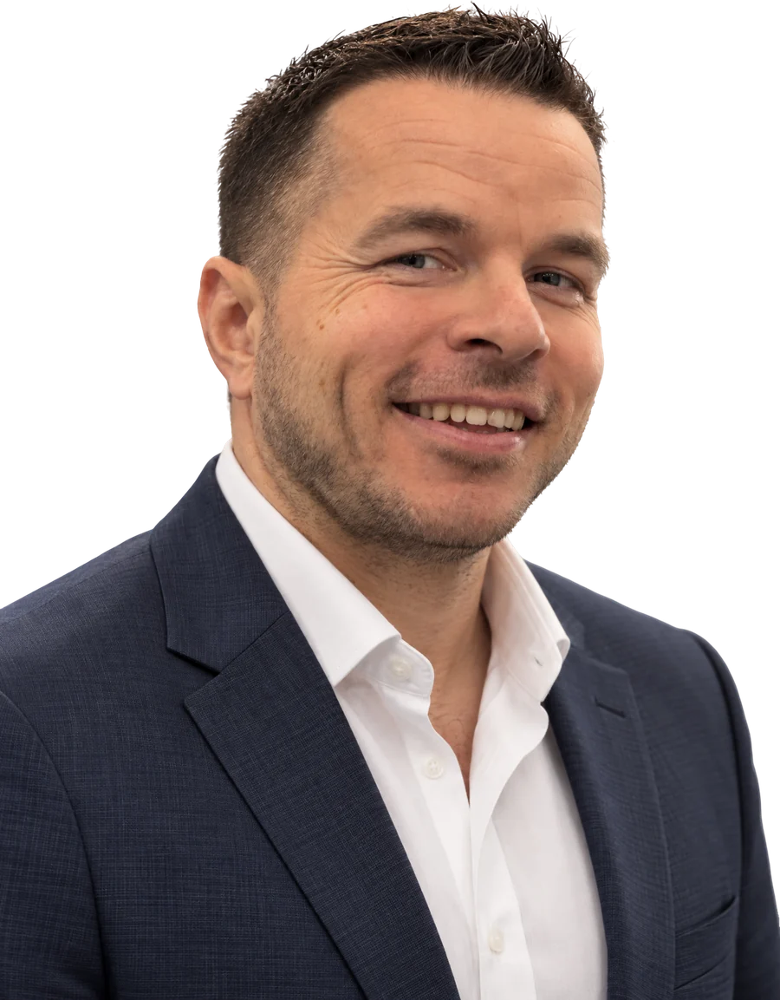
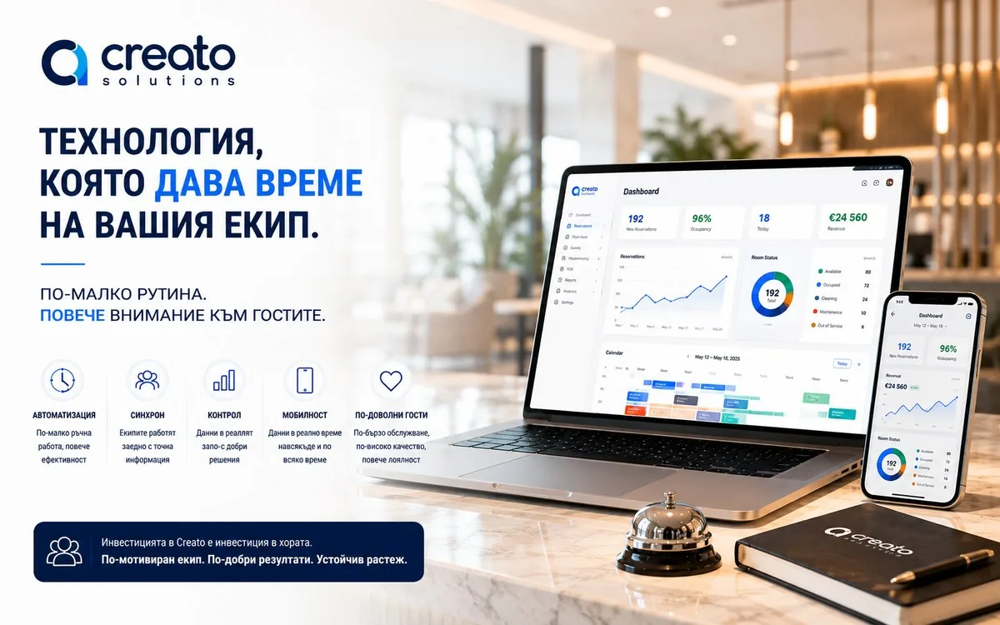
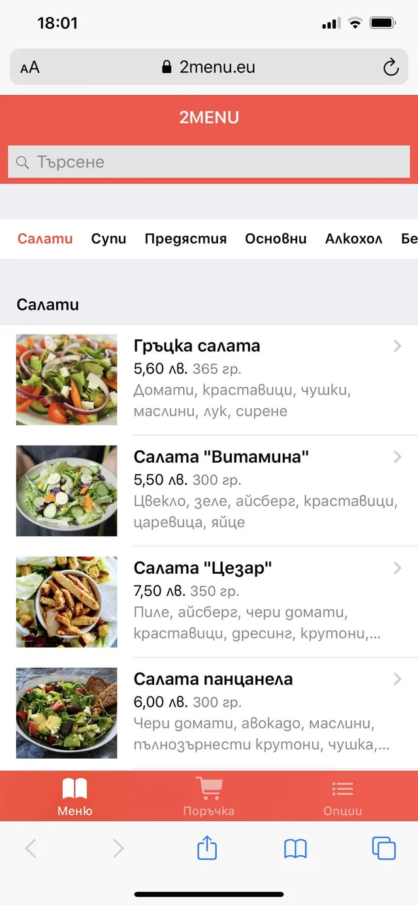

Недвижими имоти / Поморие
Как купувачите намират „Теоинвест“
+150%
органичен трафик. Отговарях за целия дигитален маркетинг на строителната фирма: SEO, рекламите в Google и Facebook, социалните мрежи и имейл кампаниите.
Дигитален маркетинг и AI
Ако клиентите трудно намират продукта ви или се колебаят преди запитването, разкажете ми къде спира разговорът.

Работил съм с



Къде спира разговорът
Хората търсят това, което предлагате, но попадат на други.
Сайтът не отговаря на въпроса, с който са дошли.
Има реклами и посещения, но не се вижда кое носи запитвания.
Избрана работа
Недвижими имоти / Поморие
органичен трафик. Отговарях за целия дигитален маркетинг на строителната фирма: SEO, рекламите в Google и Facebook, социалните мрежи и имейл кампаниите.

Хотелски софтуер / B2B
Предложих началната страница да тръгва от работата на рецепцията. След примера идва поканата за персонална демонстрация.

Разработка и маркетинг
Участвах в разработката и маркетинга на 2MENU. Гостът поръчва от масата, а екипът вижда откъде идва поръчката.
Totev Tours / октомври 2026
Разграничавам интереса към офертата от успешно изпратеното запитване. За всяко действие има отделно събитие и условие за проверка.
За мен
Този опит ми помага и в работата по 2MENU, и в маркетинга на хотелски софтуер. И в двата случая започвам с хората, които ще използват продукта всеки ден.Свалете CV (PDF)
Следващият проект
Разкажете ми къде спира разговорът.
Константин Раданчев / Поморие, България